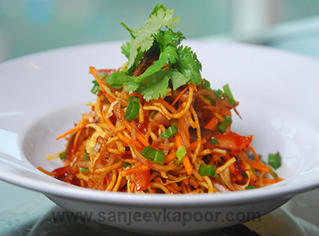

BHELPURI

Bhelpuri is a savoury snack, originating from the Indian subcontinent, and is also a type of chaat. It is made of puffed rice,vegetables and a tangy tamarind sauce.Bhel is often
identified with the beaches of Mumbai, such as Chowpatty or Juhu.Dry bhel is made from bhadang, a spicy namkeenfrom Western Maharashtra,and is consumed after garnishing with onions,
coriander and lemon juice. The Bengali variant of bhelpuri is called jhalmuri (meaning "spicy puffed rice"). A native Mysore variant of bhelpuri is known as churumuri or churmuri in Mangalore.
Bhelpuri is also made by sprinkling the puffed rice mixture with chunks of diced raw sweet mango. The finished snack is often garnished with a combination of diced onions, coriander leaves and chopped green chilies. It is sometimes served with papri puris, a deep-fried small round and crispy wheat bread.
Other variants of bhelpuri:
Bhel sevpuri - a mixture of bhelpuri, chutney, papdi and sev.
Dahi bhel puri - a mixture of bhelpuri, chutney, papdi and dahi (yogurt).
Sev papdi chaat - similar to sevpuri but with multiple types of chutney, potatoes, and chat masala.
Churmuri - finely cut pieces of onion, tomato, coriander leaves along with chilli powder are mixed, adding a few drops of coconut oil. Sometimes fried or roasted groundnuts may be added.
Healthy High-protein Bhel Puri - Bhel Puri is very popular Indian snack. This dish includes sprouts, nuts, raisins and muesli flakes that make it much healthier.
Here's a quick and easy way of making bhel puri:
1.firstly, in a large mixing bowl take 2 cups murmura. dry roast murmura if they are not crisp.
2.add ½ onion, ½ potato, 3 crushed papdi, 3 tbsp mixture and 2 tbsp fried peanuts.
3.also add 2 tbsp tomato, ½ tsp chaat masala, ¼ tsp chilli powder and ¼ tsp salt.
4.mix well making sure the spices are combined well.
5.further add 3 tbsp tamarind chutney, 2 tbsp green chutney and 1 tsp lemon juice.
6.mix well without turning murmura soggy.
7.add 2 tbsp sev and give a mix.
8.finally, enjoy bhel puri topped with few crushed papdi and garnished with onion, coriander.
See it was that easy .
CHINESE BHEL

Chinese bhel is a fast food item of Northeast Indian origin. It is a variant of the chop suey. It is also widely popular in Mumbai.
Chinese bhel usually consists of deep fried noodles, finely chopped onions, shredded cabbage, sliced green pepper and carrots, soy,
tomato and red chili sauce, salt and black pepper powder, ajinomoto and garlic paste in varying quantities.
Here's a quick and easy way of making chinese bhel:
1.firstly, to prepare fried noodles boil 5 cup water along with ½ tsp salt and 1 tsp oil.
2.once the water comes to a boil, add 2 pack noodles. follow package instructions to cook the noodles.
3.boil the noodles till it turns al dente (cooked so as to be still firm when bitten).
4.drain off the noodles and pour cold water to stop further cooking.
5.once the noodles are dried completely, spread a handful of cooked noodles into hot oil. repeat this in batches.
6.stir occasionally, and be careful as the water content in noodles may splutter oil.
7.fry the noodles flipping both the sides to golden brown and crisp.
8.strain off the fried noodles onto kitchen paper to absorb excess oil.
9.now take all the fried noodles and crush slightly. keep aside.
10.now take all the fried noodles and crush slightly. keep aside.
11.also saute ¼ onion and 2 tbsp spring onion slightly.
12.further saute ½ carrot, ½ capsicum and 1 cup cabbage till they are half cooked yet crunchy.
13.now add 2 tbsp schezwan sauce, 2 tbsp tomato sauce, 1 tsp soy sauce, 1 tbsp vinegar, ½ tsp pepper and ¼ tsp salt.
14.mix well on high flame till the sauce combines well.
15.transfer the masala mixture onto fried bhel.
16.add 2 tbsp spring onions and mix well.
17.inally, serve chinese bhel immediately garnished with more spring onions.